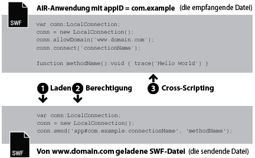
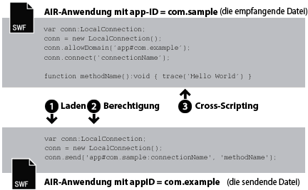

| Paket | flash.net |
| Klasse | public class LocalConnection |
| Vererbung | LocalConnection |
| Sprachversion: | ActionScript 3.0 |
| Laufzeitversionen: | AIR 1.0, Flash Player 9, Flash Lite 4 |
- innerhalb einer einzelnen SWF-Datei
- zwischen mehreren SWF-Dateien
- zwischen Inhalt (SWF-basiert oder HTML-basiert) in AIR-Anwendungen
- zwischen Inhalt (SWF-basiert oder HTML-basiert) in einer AIR-Anwendung und SWF-Inhalt, der in einem Browser ausgeführt wird
Unterstützung von AIR-Profilen: Diese Funktion wird unter allen Desktopbetriebssystemen und auf allen Geräten mit AIR für TV unterstützt, jedoch nicht auf mobilen Geräten. Mit der LocalConnection.isSupported-Eigenschaft können Sie testen, ob zur Laufzeit Unterstützung gegeben ist. Weitere Informationen zum API-Support über mehrere Profile finden Sie unter Unterstützung von AIR-Profilen.
Hinweis: Geräte mit AIR für TV unterstützen nur die Kommunikation zwischen SWF-basierten Inhalten in AIR-Anwendungen.
Lokale Verbindungen ermöglichen diese Art von Kommunikation zwischen SWF-Dateien ohne Verwendung von fscommand() oder JavaScript. LocalConnection-Objekte können nur zwischen Dateien ausgetauscht werden, die auf demselben Client-Computer abgespielt werden. Sie können jedoch in verschiedenen Anwendungen ausgeführt werden. Beispielsweise kann die eine Datei in einem Browser und eine SWF-Datei in Adobe AIR abgespielt werden.
In ActionScript 3.0 erstellte LocalConnection-Objekte können mit LocalConnection-Objekten kommunizieren, die in ActionScript 1.0 oder 2.0 erstellt wurden. Dasselbe gilt umgekehrt: In ActionScript 1.0 oder 2.0 erstellte LocalConnection-Objekte können mit LocalConnection-Objekten kommunizieren, die in ActionScript 3.0 erstellt wurden. Flash Player verarbeitet die Kommunikation zwischen LocalConnection-Objekten verschiedener Versionen automatisch.
Es gibt drei Verfahren, einem LocalConnection-Objekt Rückrufmethoden hinzuzufügen:
- Erstellen einer Unterklasse der LocalConnection-Klasse und Hinzufügen von Methoden.
- Einstellen der
LocalConnection.client-Eigenschaft auf ein Objekt, das die Methoden implementiert. - Erstellen einer dynamischen Klasse, die LocalConnection erweitert, und dynamisches Anhängen der Methoden.
Um zu verdeutlichen, wie LocalConnection-Objekte für die Kommunikation zwischen zwei Dateien verwendet werden, ist es hilfreich, die in jeder der Dateien verwendeten Befehle zu kennen. Eine Datei wird als empfangende Datei bezeichnet. Diese Datei enthält die aufzurufende Methode. Die empfangende Datei muss ein LocalConnection-Objekt und einen Aufruf der Methode connect() enthalten. Die andere Datei wird als sendende Datei bezeichnet. Diese Datei ruft die Methode auf. Die sendende Datei muss ein anderes LocalConnection-Objekt und einen Aufruf der send()-Methode enthalten.
Die Verwendung der Methoden send() und connect() ist unterschiedlich und hängt davon ab, ob sich die Dateien in derselben Domäne, in verschiedenen Domänen mit bekannten Domänennamen oder in verschiedenen Domänen mit unbekannten oder dynamischen Domänennamen befinden. In den folgenden Abschnitten werden diese drei Situationen mit entsprechenden Codebeispielen erläutert.
Gleiche Domäne: Die einfachste Art der Verwendung von LocalConnection-Objekten besteht darin, die Kommunikation nur zwischen LocalConnection-Objekten zuzulassen, die sich in derselben Domäne befinden, da die Kommunikation innerhalb derselben Domäne standardmäßig unterstützt wird. Für die Kommunikation von zwei Dateien innerhalb derselben Domäne müssen Sie keine speziellen Sicherheitsmaßnahmen implementieren. Sie übergeben einfach denselben Wert für den Parameter connectionName an die Methode connect() und an die Methode send():

// receivingLC is in http://www.domain.com/receiving.swf
receivingLC.connect('myConnection');
// sendingLC is in http://www.domain.com/sending.swf
// myMethod() is defined in sending.swf
sendingLC.send('myConnection', 'myMethod');
Unterschiedliche Domänen mit bekannten Domänennamen: Für die Kommunikation von zwei SWF-Dateien in unterschiedlichen Domänen müssen Sie die Kommunikation zwischen den Domänen zulassen, indem Sie die Methode allowDomain() aufrufen. Außerdem müssen Sie den Verbindungsnamen in der Methode send() mit dem Domänennamen des empfangenden LocalConnection-Objekts qualifizieren:

// receivingLC is in http://www.domain.com/receiving.swf
receivingLC.allowDomain('www.anotherdomain.com');
receivingLC.connect('myConnection');
// sendingLC is in http://www.anotherdomain.com/sending.swf
sendingLC.send('www.domain.com:myConnection', 'myMethod');
Unterschiedliche Domänen mit unbekannten Domänennamen: In einigen Fällen ist es erforderlich, die Portierbarkeit der Datei mit dem empfangenden LocalConnection-Objekt zwischen Domänen zu erhöhen. Um anzuweisen, dass das sendende und das empfangende LocalConnection-Objekt sich in unterschiedlichen Domänen befinden, ohne den Domänennamen in der Methode send() anzugeben, fügen Sie im Aufruf von connect() und send() am Anfang des Verbindungsnamens einen Unterstrich (_) hinzu. Um die Kommunikation zwischen den beiden Domänen zuzulassen, rufen Sie die Methode allowDomain() auf, und übergeben Sie die Domänen, von denen LocalConnection-Aufrufe zugelassen werden sollen. Sie können auch das Platzhalterargument (*) übergeben, um Aufrufe von allen Domänen zuzulassen:

// receivingLC is in http://www.domain.com/receiving.swf
receivingLC.allowDomain('*');
receivingLC.connect('_myConnection');
// sendingLC is in http://www.anotherdomain.com/sending.swf
sendingLC.send('_myConnection', 'myMethod');
Von Flash Player an eine AIR-Anwendung. Ein LocalConnection-Objekt, das in der AIR-Anwendungssandbox erstellt wurde, verwendet einen speziellen String als Verbindungspräfix anstelle eines Domänennamens. Dieser String hat die Form: app#appID.pubID, wobei appID die Anwendungs-ID und pubID die Herausgeber-ID der Anwendung ist. (Schließen Sie die Herausgeber-ID nur dann mit ein, wenn die AIR-Anwendung eine Herausgeber-ID verwendet.) Wenn eine AIR-Anwendung zum Beispiel die Anwendungs-ID „com.example“ und keine Herausgeber-ID hat, könnten Sie app#com.example:myConnection als lokalen Verbindungsstring verwenden. Die AIR-Anwendung muss auch die allowDomain()-Methode aufrufen und dabei die Ursprungsdomäne der aufrufenden SFW-Datei übergeben:

// receivingLC is an AIR application with app ID = com.example (and no publisher ID)
receivingLC.allowDomain('www.domain.com');
receivingLC.connect('myConnection');
// sendingLC is in http://www.domain.com/sending.swf
sendingLC.send('app#com.example:myConnection', 'myMethod');
Hinweis: Wenn eine AIR-Anwendung eine SWF-Datei außerhalb der AIR-Anwendungssandbox lädt, gelten für die Herstellung einer lokalen Verbindung zu dieser SWF-Datei dieselben Regeln wie für das Herstellen einer Verbindung zu einer SWF-Datei, die in Flash Player ausgeführt wird.
Von einer AIR-Anwendung zu Flash Player. Wenn eine AIR-Anwendung mit einer SWF-Datei kommuniziert, die in der Flash Player-Laufzeitumgebung ausgeführt wird, müssen Sie die Kommunikation zwischen beiden zulassen, indem Sie die allowDomain()-Methode aufrufen und das Verbindungspräfix der AIR-Anwendung übergeben. Wenn eine AIR-Anwendung zum Beispiel die Anwendungs-ID „com.example“ und keine Herausgeber-ID hat, können Sie den String app#com.example an die allowDomain()-Methode übergeben. Sie müssen den Verbindungsnamen auch in der send()-Methode mit dem Domänennamen des empfangenden LocalConnection-Objekts angeben (verwenden Sie „localhost“ als Domäne für die SWF-Dateien, die aus dem lokalen Dateisystem geladen werden):

// receivingLC is in http://www.domain.com/receiving.swf
receivingLC.allowDomain('app#com.example');
receivingLC.connect('myConnection');
// sendingLC is an AIR application with app ID = com.example (and no publisher ID)
sendingLC.send('www.domain.com:myConnection', 'myMethod');
Von einer AIR-Anwendung zu einer anderen AIR-Anwendung. Um zwischen zwei AIR-Anwendungen zu kommunizieren, müssen Sie die Kommunikation zwischen den beiden Anwendungen zulassen, indem Sie die allowDomain()-Methode aufrufen und das Verbindungspräfix der sendenden AIR-Anwendung übergeben. Wenn die sendende AIR-Anwendung zum Beispiel die Anwendungs-ID „com.example“ und keine Herausgeber-ID hat, können Sie den String app#com.example an die allowDomain()-Methode in der empfangenden Anwendung übergeben. Außerdem müssen Sie den Verbindungsnamen in der Methode send() mit dem Verbindungspräfix des empfangenden LocalConnection-Objekts qualifizieren:

// receivingLC is an AIR application with app ID = com.sample (and no publisher ID)
receivingLC.allowDomain('app#com.example');
receivingLC.connect('myConnection');
// sendingLC is an AIR application with app ID = com.example (and no publisher ID)
sendingLC.send('app#com.sample:myConnection', 'myMethod');
Sie können LocalConnection-Objekte zum Senden und Empfangen von Daten innerhalb einer Datei verwenden. Dies ist jedoch nicht gebräuchlich.
Weitere Informationen zu den Methoden send() und connect() finden Sie in den Erläuterungen zum Parameter connectionName unter den Einträgen zu LocalConnection.send() und LocalConnection.connect(). Siehe auch die Einträge zu allowDomain() und domain.
Verwandte API-Elemente
flash.net.LocalConnection.allowDomain()
flash.net.LocalConnection.domain
 Vererbte öffentliche Eigenschaften ausblenden
Vererbte öffentliche Eigenschaften ausblenden Vererbte öffentliche Eigenschaften anzeigen
Vererbte öffentliche Eigenschaften anzeigen| Eigenschaft | Definiert von | ||
|---|---|---|---|
| client : Object
Gibt das Objekt an, bei dem Callback-Methoden aufgerufen werden. | LocalConnection | ||
 | constructor : Object
Ein Verweis auf das Klassenobjekt oder die Konstruktorfunktion für eine angegebene Objektinstanz. | Object | |
| domain : String [schreibgeschützt]
Ein String, der die Domäne des Pfads der aktuellen Datei angibt. | LocalConnection | ||
| isPerUser : Boolean
Gibt an, ob das LocalConnection-Objekt auf den aktuellen Benutzer beschränkt ist („true“) oder ob es global allen Benutzern des Computers zur Verfügung steht („false“). | LocalConnection | ||
| isSupported : Boolean [statisch] [schreibgeschützt]
Die isSupported-Eigenschaft hat den Wert „true“, wenn die LocalConnection-Klasse von der aktuellen Plattform unterstützt wird, andernfalls hat sie den Wert „false“. | LocalConnection | ||
| Methode | Definiert von | ||
|---|---|---|---|
Erstellt ein LocalConnection-Objekt. | LocalConnection | ||
| addEventListener(type:String, listener:Function, useCapture:Boolean = false, priority:int = 0, useWeakReference:Boolean = false):void
Registriert ein Ereignis-Listener-Objekt bei einem EventDispatcher-Objekt, sodass der Listener über ein Ereignis benachrichtigt wird. | EventDispatcher | |
Gibt eine oder mehrere Domänen an, die LocalConnection-Aufrufe an diese LocalConnection-Instanz senden können. | LocalConnection | ||
Gibt eine oder mehrere Domänen an, die LocalConnection-Aufrufe an dieses LocalConnection-Objekt senden können. | LocalConnection | ||
Schließt das LocalConnection-Objekt (bricht die Verbindung ab). | LocalConnection | ||
Bereitet ein LocalConnection-Objekt auf den Empfang von Befehlen vor, die von einem send()-Befehl gesendet werden (vom sendenden LocalConnection-Objekt). | LocalConnection | ||
|
Sendet ein Ereignis in den Ereignisablauf. | EventDispatcher | |
|
Überprüft, ob das EventDispatcher-Objekt Listener für einen bestimmten Ereignistyp registriert hat. | EventDispatcher | |
|
Gibt an, ob für ein Objekt eine bestimmte Eigenschaft definiert wurde. | Object | |
|
Gibt an, ob eine Instanz der Object-Klasse in der Prototypkette des Objekts vorhanden ist, das als Parameter angegeben wurde. | Object | |
|
Gibt an, ob die angegebene Eigenschaft vorhanden ist und durchlaufen werden kann. | Object | |
|
Entfernt einen Listener aus dem EventDispatcher-Objekt. | EventDispatcher | |
Ruft die methodName-Methode für eine mit der connect(connectionName)-Methode geöffnete Verbindung auf (im empfangenden LocalConnection-Objekt). | LocalConnection | ||
|
Legt die Verfügbarkeit einer dynamischen Eigenschaft für Schleifenoperationen fest. | Object | |
|
Gibt die Stringdarstellung dieses Objekts zurück, formatiert entsprechend den Konventionen des Gebietsschemas. | Object | |
|
Gibt das angegebene Objekt als String zurück. | Object | |
|
Gibt den Grundwert des angegebenen Objekts zurück. | Object | |
|
Überprüft, ob bei diesem EventDispatcher-Objekt oder bei einem seiner Vorgänger ein Ereignis-Listener für einen bestimmten Ereignistyp registriert ist. | EventDispatcher | |
| Ereignis | Übersicht | Definiert von | ||
|---|---|---|---|---|
| [broadcast event] Wird ausgelöst, wenn Flash Player oder eine AIR-Anwendung den Betriebssystemfokus erhält und aktiv wird. | EventDispatcher | ||
| Wird ausgelöst, wenn eine Ausnahme asynchron, d. h. aus nativem asynchronem Code ausgelöst wird. | LocalConnection | |||
| [broadcast event] Wird ausgelöst, wenn Flash Player- oder die AIR-Anwendung den Fokus verliert und inaktiv wird. | EventDispatcher | ||
| Wird ausgelöst, wenn mit einem Aufruf von „LocalConnection.send()“ versucht wird, Daten an eine andere Sicherheitssandbox zu senden. | LocalConnection | |||
| Wird ausgelöst, wenn der Status eines LocalConnection-Objekts protokolliert wird. | LocalConnection | |||
client | Eigenschaft |
client:Object| Sprachversion: | ActionScript 3.0 |
| Laufzeitversionen: | AIR 1.0, Flash Player 9, Flash Lite 4 |
Gibt das Objekt an, bei dem Callback-Methoden aufgerufen werden. Standardeinstellung ist das erstellte LocalConnection-Objekt this. Wenn Sie die client-Eigenschaft auf ein anderes Objekt einstellen, werden die Callback-Methoden bei dem eingestellten Objekt aufgerufen.
Implementierung
public function get client():Object public function set client(value:Object):voidAuslöser
TypeError — Die client-Eigenschaft muss auf ein Objekt eingestellt werden, das nicht null ist.
|
domain | Eigenschaft |
domain:String [schreibgeschützt] | Sprachversion: | ActionScript 3.0 |
| Laufzeitversionen: | AIR 1.0, Flash Player 9, Flash Lite 4 |
Ein String, der die Domäne des Pfads der aktuellen Datei angibt.
Bei Inhalt, der in der Sicherheitssandbox der Anwendung Adobe AIR ausgeführt wird (Inhalt, der mit der AIR-Anwendung installiert wurde), verwendet die Laufzeit den String app# gefolgt von der Anwendungs-ID für die AIR-Anwendung (definiert in der Anwendungsdeskriptordatei) anstelle der Superdomäne. So wird zum Beispiel ein connectionName für eine Anwendung mit der Anwendungs-ID com.example.air.MyApp connectionName in "app#com.example.air.MyApp:connectionName" aufgelöst.
In für Flash Player 9 oder neuere Versionen veröffentlichten SWF-Dateien entspricht der zurückgegebene String der exakten Domäne der Datei, einschließlich Subdomänen. Wenn die Datei beispielsweise unter www.adobe.com gespeichert ist, gibt dieser Befehl "www.adobe.com" zurück.
Wenn die aktuelle Datei eine lokale Datei auf dem Client-Computer ist, die in Flash Player ausgeführt wird, gibt dieser Befehl "localhost" zurück.
Gewöhnlich wird bei dieser Eigenschaft der Domänenname des sendenden LocalConnection-Objekts als Parameter in die Methode einbezogen, die Sie im empfangenden LocalConnection-Objekt oder mit LocalConnection.allowDomain() aufrufen möchten, um Befehle von einer angegebenen Domäne zu akzeptieren. Wenn Sie den Datenaustausch nur zwischen LocalConnection-Objekten derselben Domäne aktivieren, ist diese Eigenschaft nicht erforderlich.
Implementierung
public function get domain():StringVerwandte API-Elemente
isPerUser | Eigenschaft |
isPerUser:Boolean| Sprachversion: | ActionScript 3.0 |
| Laufzeitversionen: | Flash Player 10.0.32, AIR 1.5.2 |
Gibt an, ob das LocalConnection-Objekt auf den aktuellen Benutzer beschränkt ist (true) oder ob es global allen Benutzern des Computers zur Verfügung steht (false). Diese Eigenschaft betrifft nur Inhalt, der unter Mac OS X ausgeführt wird; andere Plattformen ignorieren diesen Parameter. Verbindungen unter Windows- und Linux-Betriebssystemen werden immer auf Benutzerbasis hergestellt.
In Flash Player 10.0.22 und älteren Versionen sowie in AIR 1.5.1 und älteren Versionen haben alle LocalConnection-Objekte unter Mac OS X einen globalen Gültigkeitsbereich. Stellen Sie diese Eigenschaft immer auf true ein, falls Sie nicht die Kompatibilität mit älteren Versionen sicherstellen müssen. In zukünftigen Versionen wird der Standardwert dieser Eigenschaft möglicherweise zu true geändert.
Der Standardwert ist false.
Implementierung
public function get isPerUser():Boolean public function set isPerUser(value:Boolean):voidisSupported | Eigenschaft |
isSupported:Boolean [schreibgeschützt] | Sprachversion: | ActionScript 3.0 |
| Laufzeitversionen: | Flash Player 10.1, AIR 2 |
Die isSupported-Eigenschaft hat den Wert true, wenn die LocalConnection-Klasse von der aktuellen Plattform unterstützt wird, andernfalls hat sie den Wert false.
Implementierung
public static function get isSupported():BooleanLocalConnection | () | Konstruktor |
public function LocalConnection()| Sprachversion: | ActionScript 3.0 |
| Laufzeitversionen: | AIR 1.0, Flash Player 9, Flash Lite 4 |
Erstellt ein LocalConnection-Objekt. Mit LocalConnection-Objekten können Sie die Kommunikation zwischen verschiedenen Dateien auf demselben Client-Computer ermöglichen.
Verwandte API-Elemente
allowDomain | () | Methode |
public function allowDomain(... domains):void| Sprachversion: | ActionScript 3.0 |
| Laufzeitversionen: | AIR 1.0, Flash Player 9, Flash Lite 4 |
Gibt eine oder mehrere Domänen an, die LocalConnection-Aufrufe an diese LocalConnection-Instanz senden können.
Sie können diese Methode nicht verwenden, um Dateien, die mit einem sicheren Protokoll (HTTPS) gehostet werden, den Zugriff von Dateien zu erlauben, die in nicht sicheren Protokollen gehostet werden. Sie müssen stattdessen die Ereignisprozedur allowInsecureDomain() verwenden.
Sie sollten diese Methode verwenden, damit eine untergeordnete Datei von einer anderen Domäne LocalConnection-Aufrufe an die übergeordnete Datei vornehmen kann, ohne dass die endgültige Domäne bekannt ist, aus der die untergeordnete Datei stammt. Dies ist beispielsweise der Fall, wenn Sie Weiterleitungen mit Lastausgleich oder Server von Dritten verwenden. In diesem Fall können Sie die Eigenschaft url des mit der Ladung verwendeten LoaderInfo-Objekts einsetzen, um die Domäne dazu zu bewegen, die Methode allowDomain() anzuwenden. Wenn Sie beispielsweise mit einem Loader-Objekt eine untergeordnete Datei laden, können Sie, sobald der Ladevorgang abgeschlossen ist, die Eigenschaft contentLoaderInfo.url des Loader-Objekts überprüfen und die Domäne anhand der vollständigen URL parsen. Wenn Sie so verfahren, müssen Sie unbedingt warten, bis die Datei geladen wurde, denn die contentLoaderInfo.url-Eigenschaft verfügt erst, nachdem die Datei vollständig geladen wurde, über ihren endgültigen, korrekten Wert.
Es kann auch die entgegengesetzte Situation auftreten: Angenommen, Sie haben eine untergeordnete Datei erstellt, die LocalConnection-Aufrufe von der übergeordnete Datei annehmen möchte, der aber die Domäne der übergeordneten Datei nicht bekannt ist. In diesem Fall implementieren Sie diese Methode, indem Sie prüfen, ob das Domänenargument mit der Domäne der Eigenschaft loaderInfo.url in der geladenen Datei übereinstimmt. Auch diesmal müssen Sie die Domäne anhand der vollständigen URL von loaderInfo.url parsen. In diesem Fall müssen Sie jedoch nicht warten, bis die übergeordnete Datei geladen wurde, denn das Laden der übergeordneten Datei ist bereits abgeschlossen, wenn der Ladevorgang für die untergeordnete Datei erfolgt.
Bedenken Sie beim Einsatz dieser Methode das Sicherheitsmodell von Flash Player. In der Standardeinstellung wird ein LocalConnection-Objekt mit der Sandbox der erstellenden Datei verknüpft. Domänenübergreifende Aufrufe für LocalConnection-Objekte sind nur dann zulässig, wenn Sie in der empfangenden Datei die Methode LocalConnection.allowDomain() aufrufen. In Adobe AIR unterliegt Inhalt in der Sicherheitssandbox der Anwendung (Inhalt, der mit der AIR-Anwendung installiert wird) nicht diesen Sicherheitseinschränkungen.
Weitere Informationen zum Thema Sicherheit finden Sie im Flash Player Developer Center im Abschnitt Sicherheit.
Hinweis: Die Form der Methode allowDomain() hat sich geändert. In den früheren Versionen (ActionScript 1.0 und 2.0) war allowDomain eine zu implementierende Callback-Methode. In ActionScript 3.0 ist allowDomain() eine in den LocalConnection-Aufruf eingebettete Methode. Aufgrund dieser Änderung ist die Methode allowDomain() jetzt mit flash.system.Security.allowDomain() vergleichbar.
Parameter
... domains — Ein oder mehrere Strings mit den Namen der Domänen, von denen Sie LocalConnection-Aufrufe zulassen möchten. Für diesen Parameter gelten zwei Sonderfälle:
|
Auslöser
ArgumentError — Alle angegebenen Parameter müssen Strings mit einem anderen Wert als null sein.
|
Verwandte API-Elemente
allowInsecureDomain | () | Methode |
public function allowInsecureDomain(... domains):void| Sprachversion: | ActionScript 3.0 |
| Laufzeitversionen: | AIR 1.0, Flash Player 9, Flash Lite 4 |
Gibt eine oder mehrere Domänen an, die LocalConnection-Aufrufe an dieses LocalConnection-Objekt senden können.
Die Methode allowInsecureDomain() funktioniert wie die Methode allowDomain(), mit der Ausnahme, dass die Methode allowInsecureDomain() auch das Senden von LocalConnection-Aufrufen von Dateien aus HTTPS-Quellen durch SWF-Dateien aus Nicht-HTTPS-Quellen zulässt. Dieser Unterschied ist nur von Bedeutung, wenn Sie die Methode allowInsecureDomain() aus einer Datei aufrufen, die über HTTPS geladen wurde. Sie müssen die Methode allowInsecureDomain() auch bei Nicht-HTTPS-/HTTPS-Verbindungen innerhalb derselben Domäne aufrufen. Standardmäßig sind LocalConnection-Aufrufe von Dateien aus Nicht-HTTPS-Quellen an Dateien aus HTTPS-Quellen selbst innerhalb derselben Domäne nicht zulässig.
Der Aufruf von allowInsecureDomain() wird nicht empfohlen, da hierdurch die durch HTTPS gewährleistete Sicherheit möglicherweise gefährdet wird. Wenn Sie eine Datei über HTTPS laden, können Sie relativ sicher sein, dass die Datei bei der Übermittlung über das Netzwerk nicht manipuliert wird. Wenn Sie dann LocalConnection-Aufrufe an diese Datei durch eine Datei ohne HTTPS zulassen, akzeptieren Sie Aufrufe von einer Datei, die während der Übertragung möglicherweise manipuliert wurde. In diesem Fall ist extreme Vorsicht geboten, da Sie sich nicht auf die Authentizität der LocalConnection-Aufrufe an die über HTTPS geladene Datei verlassen können.
Standardmäßig können nur andere Dateien, die mit dem HTTPS-Protokoll gehostet werden, auf mit dem HTTPS-Protokoll gehostete Dateien zugreifen. Durch diese Implementierung bleibt die durch das HTTPS-Protokoll gewährleistete Integrität gewahrt.
Der Einsatz dieser Methode zur Umgehung des Standardverhaltens empfiehlt sich nicht, da damit die HTTPS-Sicherheit beeinträchtigt wird. In einigen Fällen ist dies jedoch notwendig. Beispiel: Sie müssen den Zugriff auf für Flash Player 9 oder eine neuere Version veröffentlichte HTTPS-Dateien durch HTTPS-Dateien zulassen, die für Flash Player 6 oder eine ältere Version veröffentlicht wurden.
Weitere Informationen zum Thema Sicherheit finden Sie im Flash Player Developer Center im Abschnitt Sicherheit.
Parameter
... domains — Ein oder mehrere Strings mit den Namen der Domänen, von denen Sie LocalConnection-Aufrufe zulassen möchten. Für diesen Parameter gibt es zwei Sonderfälle:
|
Auslöser
ArgumentError — Alle angegebenen Parameter müssen Strings mit einem anderen Wert als null sein.
|
Verwandte API-Elemente
close | () | Methode |
public function close():void| Sprachversion: | ActionScript 3.0 |
| Laufzeitversionen: | AIR 1.0, Flash Player 9, Flash Lite 4 |
Schließt das LocalConnection-Objekt (bricht die Verbindung ab). Rufen Sie diesen Befehl auf, wenn das Objekt keine Befehle mehr annehmen soll, beispielsweise, wenn Sie einen connect()-Befehl mit demselben Parameter connectionName in einer anderen SWF-Datei aufrufen möchten.
Auslöser
ArgumentError — Die LocalConnection-Instanz kann nicht geschlossen werden, da sie nicht verbunden ist.
|
Verwandte API-Elemente
connect | () | Methode |
public function connect(connectionName:String):void| Sprachversion: | ActionScript 3.0 |
| Laufzeitversionen: | AIR 1.0, Flash Player 9, Flash Lite 4 |
Bereitet ein LocalConnection-Objekt auf den Empfang von Befehlen vor, die von einem send()-Befehl gesendet werden (vom sendenden LocalConnection-Objekt). Das mit der connect()-Methode verwendete Objekt ist das empfangende LocalConnection-Objekt. Das empfangende und das sendende Objekt müssen auf demselben Client-Computer ausgeführt werden.
Um eine „Race“-Bedingung zu vermeiden, definieren Sie die mit dem empfangenden LocalConnection-Objekt verknüpften Methoden, bevor Sie diese Methode aufrufen, wie im Beispiel zur Klasse „LocalConnection“ gezeigt.
In der Standardeinstellung wird das connectionName-Argument in den Wert "superdomain:connectionName" aufgelöst, wobei superdomain die Superdomäne der Datei mit dem Befehl connect() ist. Wenn sich beispielsweise die Datei mit dem empfangenden LocalConnection-Objekt unter www.someDomain.com befindet, wird connectionName in "someDomain.com:connectionName" aufgelöst. (Wenn sich eine Datei, die in Flash Player ausgeführt wird, auf dem Client-Computer befindet, wird superdomain der Wert "localhost" zugewiesen.)
Bei Inhalt, der in der Sicherheitssandbox der Anwendung Adobe AIR ausgeführt wird (Inhalt, der mit der AIR-Anwendung installiert wurde), verwendet die Laufzeit den String app# gefolgt von der Anwendungs-ID für die AIR-Anwendung (definiert in der Anwendungsdeskriptordatei) anstelle der Superdomäne. So wird zum Beispiel ein connectionName für eine Anwendung mit der Anwendungs-ID com.example.air.MyApp connectionName in "app#com.example.air.MyApp:connectionName" aufgelöst.
Ebenso lässt Flash Player das empfangende LocalConnection-Objekt nur Befehle von sendenden LocalConnection-Objekten empfangen, deren Verbindungsnamen ebenfalls in den Wert "superdomain:connectionName" aufgelöst werden. Auf diese Weise können in Flash Player zwischen Dateien derselben Domäne ganz einfach Daten ausgetauscht werden.
Wenn Sie den Datenaustausch nur zwischen Dateien in derselben Domäne implementieren, geben Sie einen String für connectionName an, der nicht mit einem Unterstrich (_) beginnt und der keinen Domänennamen angibt (beispielsweise "myDomain:connectionName"). Verwenden Sie denselben String in der Methode connect(connectionName).
Wenn Sie eine Kommunikation zwischen Dateien in unterschiedlichen Domänen implementieren, lässt sich die Portierbarkeit der Datei mit dem empfangenden LocalConnection-Objekt erhöhen, indem Sie für connectionName einen String angeben, der mit einem Unterstrich (_) beginnt. Im Folgenden werden zwei mögliche Fälle erläutert:
- Wenn der String für
connectionNamenicht mit einem Unterstrich (_) beginnt, wird ein Präfix mit der Superdomäne und einen Doppelpunkt hinzugefügt (z. B."myDomain:connectionName"). Dies stellt zwar sicher, dass es keinen Konflikt zwischen Ihrer Verbindung und gleichnamigen Verbindungen aus anderen Domänen gibt, allerdings müssen sendende LocalConnection-Objekte ebenfalls diese Superdomäne angeben (z. B."myDomain:connectionName"). Wenn die Datei mit dem empfangenden LocalConnection-Objekt in eine andere Domäne verschoben wird, ändert der Player das Präfix entsprechend der neuen Superdomäne (z. B."anotherDomain:connectionName"). Alle sendenden LocalConnection-Objekte müssen dann manuell bearbeitet werden, damit sie auf die neue Superdomäne verweisen. - Wenn der String für
connectionNamemit einem Unterstrich beginnt (zum Beispiel,"_connectionName"), wird dem String kein Präfix hinzugefügt. Das heißt, empfangende und sendende LocalConnection-Objekte verwenden identische Strings fürconnectionName. Wenn das empfangende Objekt mitallowDomain()angibt, dass Verbindungen von allen Domänen zulässig sind, können Sie die Datei mit dem empfangenden LocalConnection-Objekt in eine andere Domäne verschieben, ohne die sendenden LocalConnection-Objekte zu ändern.
Nähere Informationen finden Sie in der Übersicht über die Klasse und in der Erörterung zu connectionName in send() sowie in den Einträgen allowDomain() und domain.
Hinweis: Doppelpunkte werden als Sonderzeichen zum Trennen der Superdomäne vom String connectionName verwendet. Ein String für connectionName, der einen Doppelpunkt enthält, ist nicht gültig.
Bedenken Sie beim Einsatz dieser Methode das Sicherheitsmodell von Flash Player. In der Standardeinstellung wird ein LocalConnection-Objekt mit der Sandbox der erstellenden Datei verknüpft. Domänenübergreifende Aufrufe für LocalConnection-Objekte sind nur dann zulässig, wenn Sie in der empfangenden Datei die Methode LocalConnection.allowDomain() aufrufen. Sie können eine Datei daran hindern, diese Methode aufzurufen, indem Sie auf der HTML-Seite, die den SWF-Inhalt enthält, den Parameter allowNetworking der Tags object und embed festlegen.In Adobe AIR unterliegt Inhalt in der Sicherheitssandbox der Anwendung (Inhalt, der mit der AIR-Anwendung installiert wird) nicht diesen Sicherheitseinschränkungen.
Weitere Informationen zum Thema Sicherheit finden Sie im Flash Player Developer Center im Abschnitt Sicherheit.
Parameter
connectionName:String — Ein String, der mit dem Verbindungsnamen übereinstimmt, der im Befehl send() für die Kommunikation mit dem empfangenden LocalConnection-Objekt angegeben wurde.
|
Auslöser
TypeError — Der an den Parameter connectionName übergebene Wert darf nicht null sein.
| |
ArgumentError — Dieser Fehler kann drei verschiedene Ursachen haben: 1) Der an den Parameter connectionName übergebene Stringwert war „null“. Übergeben Sie einen anderen Wert als „null“. 2) Der an den Parameter connectionName übergebene Wert enthielt einen Doppelpunkt (:). Doppelpunkte werden als Sonderzeichen zum Trennen der Superdomäne vom String connectionName in der Methode send() und nicht in der Methode connect() verwendet. 3) Die LocalConnection-Instanz ist bereits verbunden.
|
Verwandte API-Elemente
send | () | Methode |
public function send(connectionName:String, methodName:String, ... arguments):void| Sprachversion: | ActionScript 3.0 |
| Laufzeitversionen: | AIR 1.0, Flash Player 9, Flash Lite 4 |
Ruft die methodName-Methode für eine mit der connect(connectionName)-Methode geöffnete Verbindung auf (im empfangenden LocalConnection-Objekt). Das mit der send()-Methode verwendete Objekt ist das sendende LocalConnection-Objekt. Die SWF-Dateien, die das sendende und das empfangende Objekt enthalten, müssen auf demselben Client-Computer ausgeführt werden.
Die Menge der Daten, die diesem Befehl als Parameter übergeben werden können, ist auf 40 Kilobyte begrenzt. Wenn send() einen ArgumentError-Fehler auslöst, die verwendete Syntax hingegen korrekt ist, versuchen Sie, die send()-Anfragen in mehrere Befehle aufzuteilen, die jeweils weniger als 40 K Daten enthalten.
Wie unter connect() beschrieben, wird die aktuelle Superdomäne standardmäßig zu connectionName hinzugefügt. Wenn Sie den Datenaustausch zwischen verschiedenen Domänen implementieren, müssen Sie connectionName sowohl im sendenden als auch im empfangenden LocalConnection-Objekt so definieren, dass die aktuelle Superdomäne nicht zu connectionName hinzugefügt wird. Hierzu stehen Ihnen zwei Methoden zur Wahl:
- Beginnen Sie
connectionNamesowohl für das sendende als auch für das empfangende LocalConnection-Objekt mit einem Unterstrich (_). Geben Sie in der Datei mit dem empfangenden Objekt mitLocalConnection.allowDomain()an, dass Verbindungen von allen Domänen akzeptiert werden. Mit dieser Implementierung können Sie sendende und empfangende Dateien in jeder Domäne speichern. - Schließen Sie die Superdomäne in
connectionNamein das sendende LocalConnection-Objekt ein, z. B.myDomain.com:myConnectionName. Geben Sie im empfangenden Objekt mitLocalConnection.allowDomain()an, dass Verbindungen von der angegebenen Superdomäne akzeptiert werden (in diesem Fall myDomain.com) oder dass Verbindungen von allen Domänen akzeptiert werden.
Hinweis: Sie können in connectionName im empfangenden LocalConnection-Objekt keine Superdomäne angeben - dies ist nur im sendenden LocalConnection-Objekt möglich.
Bedenken Sie beim Einsatz dieser Methode das Sicherheitsmodell von Flash Player. In der Standardeinstellung wird ein LocalConnection-Objekt mit der Sandbox der erstellenden Datei verknüpft. Domänenübergreifende Aufrufe für LocalConnection-Objekte sind nur dann zulässig, wenn Sie in der empfangenden Datei die Methode LocalConnection.allowDomain() aufrufen. Für SWF-Inhalt, der im Browser ausgeführt wird, können Sie eine Datei daran hindern, diese Methode aufzurufen, indem Sie auf der HTML-Seite, die den SWF-Inhalt beinhaltet, den Parameter allowNetworking der Tags object und embed festlegen. In Adobe AIR unterliegt Inhalt in der Sicherheitssandbox der Anwendung (Inhalt, der mit der AIR-Anwendung installiert wird) nicht diesen Sicherheitseinschränkungen.
Weitere Informationen zum Thema Sicherheit finden Sie im Flash Player Developer Center im Abschnitt Sicherheit.
Parameter
connectionName:String — Entspricht dem Verbindungsnamen, der im Befehl connect() für die Kommunikation mit dem sendenden LocalConnection-Objekt angegeben wurde.
| |
methodName:String — Der Name der im empfangenden LocalConnection-Objekt aufzurufenden Methode. Die folgenden Methodennamen führen zu Fehlern bei der Befehlsausführung: send, connect, close, allowDomain, allowInsecureDomain, client und domain.
| |
... arguments — An die angegebene Methode zu übergebende zusätzliche optionale Parameter.
|
Ereignisse
securityError: — Es wurde mit LocalConnection.send() versucht, mit einer SWF-Datei in einer Sicherheitssandbox zu kommunizieren, auf die der aufrufende Code keinen Zugriff hat. Sie können dieses Problem in der Implementierung des Empfängers von LocalConnection.allowDomain() umgehen.
| |
status: — Wenn der Wert der level-Eigenschaft "status" ist, war der Aufruf erfolgreich. Wenn der Wert "error" ist, ist der Aufruf fehlgeschlagen. Der Aufruf kann fehlschlagen, wenn die empfangende SWF-Datei die Verbindung nicht zulässt.
|
Auslöser
TypeError — connectionName oder methodName weist den Wert „null“ auf. Übergeben Sie andere Werte als „null“ für diese Parameter.
| |
ArgumentError — Dieser Fehler kann folgende Ursachen haben: 1) Der Wert von connectionName oder methodName ist ein leerer String. Übergeben Sie gültige Strings für diese Parameter. 2) Für die in methodName angegebene Methode gelten Beschränkungen. 3) Die gesendete serialisierte Meldung ist zu groß (größer als 40 KB).
|
Verwandte API-Elemente
asyncError | Ereignis |
flash.events.AsyncErrorEventEigenschaft AsyncErrorEvent.type =
flash.events.AsyncErrorEvent.ASYNC_ERROR| Sprachversion: | ActionScript 3.0 |
| Laufzeitversionen: | AIR 1.0, Flash Player 9, Flash Lite 4 |
Wird ausgelöst, wenn eine Ausnahme asynchron ausgelöst wird – das heißt, aus nativem asynchronem Code.
Die KonstanteAsyncErrorEvent.ASYNC_ERROR definiert den Wert der type-Eigenschaft eines asyncError-Ereignisobjekts.
Dieses Ereignis verfügt über die folgenden Eigenschaften:
| Eigenschaft | Wert |
|---|---|
bubbles | false |
cancelable | false. Es gibt kein Standardverhalten, das abgebrochen werden kann. |
currentTarget | Das Objekt, welches das Ereignisobjekt aktiv mit einem Ereignis-Listener verarbeitet. |
target | Das Objekt, das das Ereignis auslöst. |
error | Der Fehler, der das Ereignis ausgelöst hat. |
securityError | Ereignis |
flash.events.SecurityErrorEventEigenschaft SecurityErrorEvent.type =
flash.events.SecurityErrorEvent.SECURITY_ERROR| Sprachversion: | ActionScript 3.0 |
| Laufzeitversionen: | AIR 1.0, Flash Player 9, Flash Lite 4 |
Wird ausgelöst, wenn mit einem Aufruf von LocalConnection.send() versucht wird, Daten an eine andere Sicherheitssandbox zu senden.
SecurityErrorEvent.SECURITY_ERROR definiert den Wert der type-Eigenschaft eines securityError-Ereignisobjekts.
Dieses Ereignis verfügt über die folgenden Eigenschaften:
| Eigenschaft | Wert |
|---|---|
bubbles | false |
cancelable | false. Es gibt kein Standardverhalten, das abgebrochen werden kann. |
currentTarget | Das Objekt, welches das Ereignisobjekt aktiv mit einem Ereignis-Listener verarbeitet. |
target | Das Netzwerkobjekt, das den Sicherheitsfehler ausgibt. |
text | Der als Fehlermeldung anzuzeigende Text. |
Verwandte API-Elemente
status | Ereignis |
flash.events.StatusEventEigenschaft StatusEvent.type =
flash.events.StatusEvent.STATUS| Sprachversion: | ActionScript 3.0 |
| Laufzeitversionen: | AIR 1.0, Flash Player 9, Flash Lite 4 |
Wird ausgelöst, wenn der Status eines LocalConnection-Objekts protokolliert wird. Bei erfolgreichem Aufruf von LocalConnection.send() weist die Eigenschaft level des Ereignisobjekts status den Wert "status" auf. Wenn der Aufruf fehlschlägt, weist die Eigenschaft level den Wert "error" auf. Wenn die empfangende Datei die Verbindung ablehnt, kann der Aufruf ohne Benachrichtigung an die sendende Datei fehlschlagen.
type eines status-Ereignisobjekts.
Dieses Ereignis verfügt über die folgenden Eigenschaften:
| Eigenschaft | Wert |
|---|---|
bubbles | false |
cancelable | false. Es gibt kein Standardverhalten, das abgebrochen werden kann. |
code | Eine Beschreibung des Objektstatus. |
currentTarget | Das Objekt, welches das Ereignisobjekt aktiv mit einem Ereignis-Listener verarbeitet. |
Ebene | Die Kategorie der Meldung, z. B. "status", "warning" oder "error". |
target | Das Objekt, dessen Status gemeldet wird. |
Verwandte API-Elemente
In der SWF-Datei „LocalConnectionSenderExample“ wird eine LocalConnection-Instanz erstellt. Wenn der Benutzer auf die Schaltfläche klickt, wird die Methode call() verwendet, um die Methode lcHandler in der SWF-Datei aufzurufen. Der Verbindungsname ist „myConnection“ und der Inhalt der TextField-Instanz wird als Parameter übergeben.
In der SWF-Datei „LocalConnectionReceiverExample“ wird eine LocalConnection-Instanz erstellt und die Methode connect() wird aufgerufen. Diese Methode kennzeichnet die SWF-Datei als Empfänger von Meldungen an die Verbindung mit dem Namen „myConnection“. Darüber hinaus umfasst diese Klasse eine öffentliche Methode mit dem Namen lcHandler(). Diese Methode wird in der SWF-Datei „LocalConnectionSenderExample“ aufgerufen. Beim Aufrufen dieser Methode wird der als Parameter übergebene Text an die TextField-Instanz auf der Bühne angehängt.
Hinweis: Zum Testen des Beispiels müssen beide SWF-Dateien gleichzeitig auf denselben Computer geladen werden.
// Code in LocalConnectionSenderExample.as
package {
import flash.display.Sprite;
import flash.events.MouseEvent;
import flash.net.LocalConnection;
import flash.text.TextField;
import flash.text.TextFieldType;
import flash.events.StatusEvent;
import flash.text.TextFieldAutoSize;
public class LocalConnectionSenderExample extends Sprite {
private var conn:LocalConnection;
// UI elements
private var messageLabel:TextField;
private var message:TextField;
private var sendBtn:Sprite;
public function LocalConnectionSenderExample() {
buildUI();
sendBtn.addEventListener(MouseEvent.CLICK, sendMessage);
conn = new LocalConnection();
conn.addEventListener(StatusEvent.STATUS, onStatus);
}
private function sendMessage(event:MouseEvent):void {
conn.send("myConnection", "lcHandler", message.text);
}
private function onStatus(event:StatusEvent):void {
switch (event.level) {
case "status":
trace("LocalConnection.send() succeeded");
break;
case "error":
trace("LocalConnection.send() failed");
break;
}
}
private function buildUI():void {
const hPadding:uint = 5;
// messageLabel
messageLabel = new TextField();
messageLabel.x = 10;
messageLabel.y = 10;
messageLabel.text = "Text to send:";
messageLabel.autoSize = TextFieldAutoSize.LEFT;
addChild(messageLabel);
// message
message = new TextField();
message.x = messageLabel.x + messageLabel.width + hPadding;
message.y = 10;
message.width = 120;
message.height = 20;
message.background = true;
message.border = true;
message.type = TextFieldType.INPUT;
addChild(message);
// sendBtn
sendBtn = new Sprite();
sendBtn.x = message.x + message.width + hPadding;
sendBtn.y = 10;
var sendLbl:TextField = new TextField();
sendLbl.x = 1 + hPadding;
sendLbl.y = 1;
sendLbl.selectable = false;
sendLbl.autoSize = TextFieldAutoSize.LEFT;
sendLbl.text = "Send";
sendBtn.addChild(sendLbl);
sendBtn.graphics.lineStyle(1);
sendBtn.graphics.beginFill(0xcccccc);
sendBtn.graphics.drawRoundRect(0, 0, (sendLbl.width + 2 + hPadding + hPadding), (sendLbl.height + 2), 5, 5);
sendBtn.graphics.endFill();
addChild(sendBtn);
}
}
}
// Code in LocalConnectionReceiverExample.as
package {
import flash.display.Sprite;
import flash.net.LocalConnection;
import flash.text.TextField;
public class LocalConnectionReceiverExample extends Sprite {
private var conn:LocalConnection;
private var output:TextField;
public function LocalConnectionReceiverExample() {
buildUI();
conn = new LocalConnection();
conn.client = this;
try {
conn.connect("myConnection");
} catch (error:ArgumentError) {
trace("Can't connect...the connection name is already being used by another SWF");
}
}
public function lcHandler(msg:String):void {
output.appendText(msg + "\n");
}
private function buildUI():void {
output = new TextField();
output.background = true;
output.border = true;
output.wordWrap = true;
addChild(output);
}
}
}
Tue Jun 12 2018, 10:04 AM Z